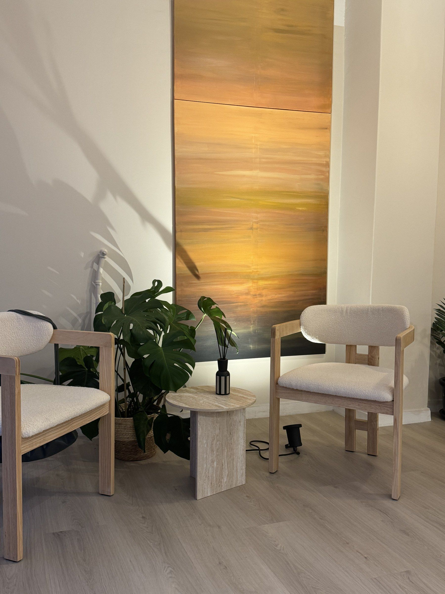

Νύχια
Τα όμορφα νύχια ξεκινούν από τη σωστή φροντίδα. Κοιτάμε πρώτα την κατάσταση των φυσικών σου νυχιών και μετά διαλέγουμε μαζί την περιποίηση.
Μανικιούρ από €15. Δες τις υπηρεσίες για νύχια
Ένας χώρος στο Κουκάκι όπου η περιποίηση γίνεται προσωπική εμπειρία. Ανακαλύπτουμε τις ανάγκες σου και αναδεικνύουμε τη φυσική σου ομορφιά μέσα από την προσοχή στη λεπτομέρεια, την τεχνογνωσία και την ουσιαστική φροντίδα.

Ένας χώρος που σε ακούει πριν σε φροντίσει.
Το MYNE Nails & Brows είναι ένας χώρος εξατομικευμένης περιποίησης νυχιών, φρυδιών και βλεφαρίδων, που βρίσκεται στην Καλλιρρόης 74, στο Κουκάκι της Αθήνας. Εστιάζουμε στην περιποίηση των φυσικών νυχιών, στο brow mapping και σε υπηρεσίες προσαρμοσμένες σε κάθε άνθρωπο, με προσοχή στην καθαριότητα, στη λεπτομέρεια και στη φροντίδα.
Δεν πιστεύουμε ότι η ομορφιά χρειάζεται να αλλάζει αυτό που είσαι. Κάθε πρόσωπο έχει τη δική του αρμονία, κάθε βλέμμα τη δική του έκφραση και κάθε νύχι τις δικές του ανάγκες. Γι' αυτό δεν ξεκινάμε ποτέ από μια έτοιμη λύση. Ξεκινάμε από εσένα.
Τα όμορφα νύχια ξεκινούν από τη σωστή φροντίδα. Κοιτάμε πρώτα την κατάσταση των φυσικών σου νυχιών και μετά διαλέγουμε μαζί την περιποίηση.
Μανικιούρ από €15. Δες τις υπηρεσίες για νύχια
Φρύδια σχεδιασμένα για το δικό σου πρόσωπο. Με brow mapping μελετάμε τις αναλογίες σου πριν δώσουμε σχήμα.
Σχηματισμός φρυδιών €15. Δες πώς δουλεύουμε τα φρύδια
Ανάδειξε τη φυσική ομορφιά του βλέμματός σου, με lash lift και βαφή πάνω στις δικές σου βλεφαρίδες.
Lash lift €35. Δες τις υπηρεσίες για βλεφαρίδες
Μακιγιάζ και συνδυαστικά πακέτα θα βρεις στον τιμοκατάλογο.
Πρώτα ακούμε, κατανοούμε και προτείνουμε. Δεν εφαρμόζουμε την ίδια λύση σε όλους.
Η σωστή τεχνική και η προσεκτική εκτέλεση φαίνονται στο αποτέλεσμα και στο πόσο αντέχει.
Η καθαριότητα και η φροντίδα είναι η βάση κάθε εμπειρίας. Εκκρεμεί: δύο συγκεκριμένες πρακτικές υγιεινής, όπως τις περιγράφει η Εύα

Η Εύα είναι brow artist και ιδιοκτήτρια του MYNE. Εκκρεμεί: δύο προτάσεις για την Εύα από τη συνέντευξη, εγκεκριμένες από την ίδια
Δεν σχεδιάζω τα ίδια φρύδια σε κάθε πρόσωπο. Κάθε πρόσωπο έχει τη δική του ισορροπία. Η δουλειά μου είναι να την ανακαλύψω.
Φωτεινός, ήρεμος, φτιαγμένος για να νιώθεις άνετα από την πρώτη στιγμή.


Εκκρεμεί: 2–3 αποσπάσματα πραγματικών κριτικών με μικρό όνομα και πηγή, με άδεια της ιδιοκτήτριας. Η ενότητα δεν εμφανίζεται μέχρι τότε.
Το MYNE Nails & Brows είναι ένας χώρος περιποίησης νυχιών, φρυδιών και βλεφαρίδων στο Κουκάκι της Αθήνας. Κάθε υπηρεσία προσαρμόζεται στον άνθρωπο: πρώτα ακούμε τι χρειάζεσαι και μετά προτείνουμε.
Στην Καλλιρρόης 74, 117 41 Αθήνα, στο Κουκάκι. Δες οδηγίες και τρόπους επικοινωνίας.
Μανικιούρ και πεντικιούρ, ημιμόνιμο, gel και acrygel, σχηματισμό και βαφή φρυδιών, lamination φρυδιών, lash lift και βαφή βλεφαρίδων, καθώς και μακιγιάζ. Όλες οι υπηρεσίες με τιμή και διάρκεια βρίσκονται στον τιμοκατάλογο.
Online, μέσα από το σύστημα κρατήσεων, όποια ώρα θέλεις. Αν προτιμάς, κάλεσε στο 210 923 6859 ή στείλε μήνυμα στο WhatsApp.
Εκκρεμεί: ωράριο. Προς επιβεβαίωση: Τρίτη–Παρασκευή 10:00–20:00, Σάββατο 10:00–18:00, Κυριακή και Δευτέρα κλειστά
Είναι ο σχεδιασμός των φρυδιών με βάση τις αναλογίες του δικού σου προσώπου. Αντί να ακολουθήσουμε ένα έτοιμο σχήμα, μετράμε και σχεδιάζουμε το σχήμα που αναδεικνύει τα χαρακτηριστικά σου. Διάβασε περισσότερα.
Καλλιρρόης 74, 117 41 Αθήνα
Τηλέφωνο: 210 923 6859
Εκκρεμεί: μία πρόταση για την πρόσβαση (πλησιέστερη στάση, απόσταση από το Μουσείο Ακρόπολης), από την ιδιοκτήτρια
Στείλε μας μήνυμα για να βρούμε την υπηρεσία που σου ταιριάζει.